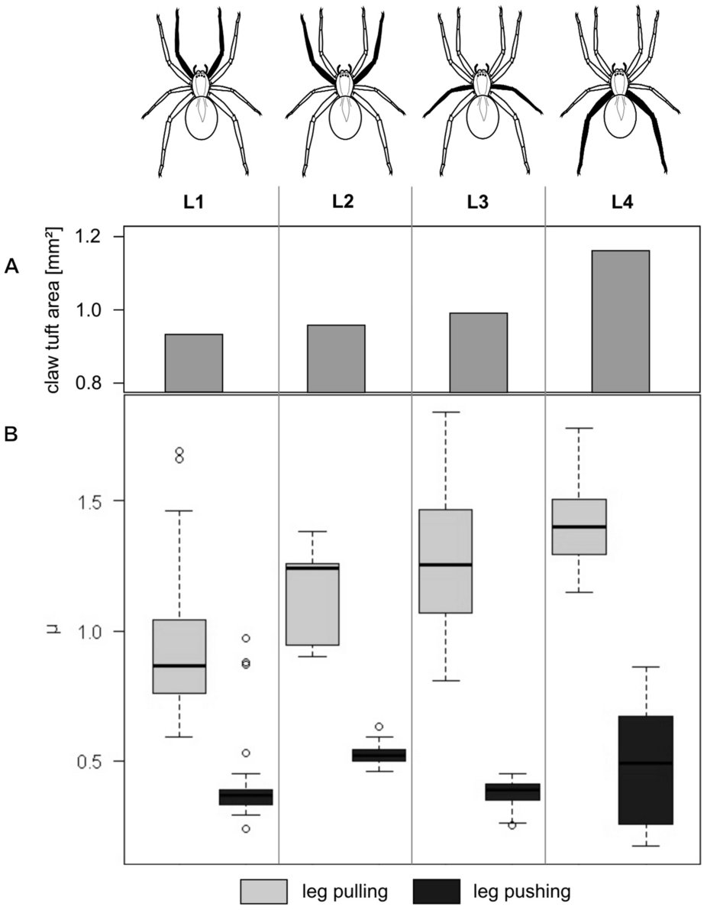
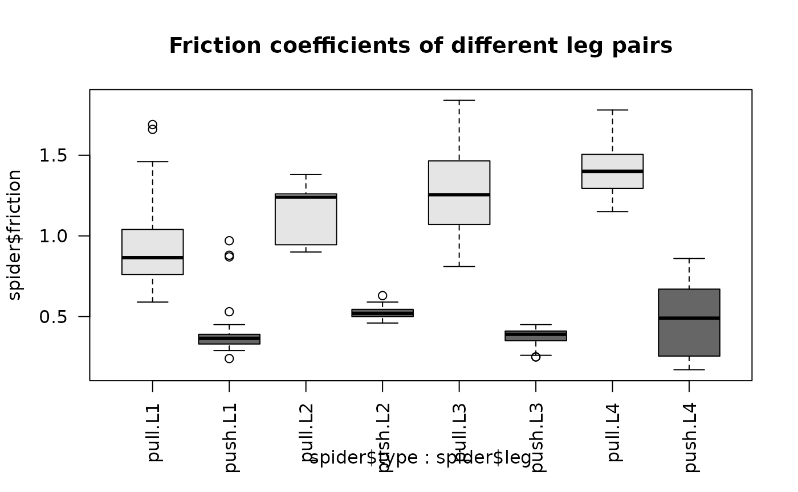
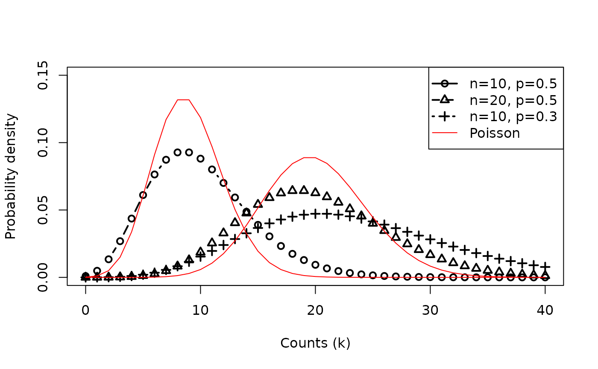

Applied Statistics for High-throughput Biology: Session 3
Levi Waldron
Source:vignettes/day3_linearmodels.Rmd
day3_linearmodels.RmdOutline
- Multiple linear regression
- Continuous and categorical predictors
- Interactions
- Model formulae
- Generalized Linear Models
- Linear, logistic, log-Linear links
- Poisson, Negative Binomial error distributions
- Multiple Hypothesis Testing
Textbook sources
-
Biomedical Data
Science
- Chapter 5: Linear models
- Chapter 6: Inference for high-dimensional data
-
Modern
Statistics for Modern Biology
- Chapter 6: Testing
-
OSCA
multi-sample
- Chapter 4: DE analyses between conditions
Example: friction of spider legs

- (A) Barplot showing total claw tuft area of the corresponding legs.
- (B) Boxplot presenting friction coefficient data illustrating median, interquartile range and extreme values.
- Wolff & Gorb, Radial arrangement of
Janus-like setae permits friction control in spiders, Sci.
Rep.
Questions
- Are the pulling and pushing friction coefficients different?
- Are the friction coefficients different for the different leg pairs?
- Does the difference between pulling and pushing friction coefficients vary by leg pair?
Qualitative answers
table(spider$leg,spider$type)
#>
#> pull push
#> L1 34 34
#> L2 15 15
#> L3 52 52
#> L4 40 40
summary(spider)
#> leg type friction
#> Length:282 Length:282 Min. :0.1700
#> Class :character Class :character 1st Qu.:0.3900
#> Mode :character Mode :character Median :0.7600
#> Mean :0.8217
#> 3rd Qu.:1.2400
#> Max. :1.8400
boxplot(spider$friction ~ spider$type * spider$leg,
col=c("grey90","grey40"), las=2,
main="Friction coefficients of different leg pairs")
Notes:
- Pulling friction is higher
- Pulling (but not pushing) friction increases for further back legs (L1 -> 4)
- Variance isn’t constant
What are linear models?
The following are examples of linear models:
- (simple linear regression)
- (quadratic regression)
- ( is a new transformed variable)
Multiple linear regression model
- Linear models can have any number of predictors
- Systematic part of model:
- is the expected value of given
- is the outcome, response, or dependent variable
- is the vector of predictors / independent variables
- are the individual predictors or independent variables
- are the regression coefficients
Random part of model:
Assumptions of linear models:
- Normal distribution
- Mean zero at every value of predictors
- Constant variance at every value of predictors
- Values that are statistically independent
Continuous predictors
- Coding: as-is, or may be scaled to unit variance (which results in adjusted regression coefficients)
- Interpretation for linear regression: An increase of one unit of the predictor results in this much difference in the continuous outcome variable
Binary predictors (2 levels)
- Coding: indicator or dummy variable (0-1 coding)
-
Interpretation for linear regression: the increase
or decrease in average outcome levels in the group coded “1”, compared
to the reference category (“0”)
- e.g.
- where x={ 1 if push friction, 0 if pull friction }
Multilevel categorical predictors (ordinal or nominal)
- Coding: dummy variables for -level categorical variable
- Comparisons with respect to a reference category, e.g.
L1:-
L2={1 if leg pair, 0 otherwise}, -
L3={1 if leg pair, 0 otherwise}, -
L4={1 if leg pair, 0 otherwise}.
-
- R re-codes factors to dummy variables automatically.
- Dummy coding depends on the reference level
Model formulae in R
- regression functions in R such as
aov(),lm(),glm(), andcoxph()use a “model formula” interface. - The formula determines the model that will be built (and tested) by the R procedure. The basic format is:
> response variable ~ explanatory variables
- The tilde means “is modeled by” or “is modeled as a function of.”
Regression with a single predictor
Model formula for simple linear regression:
> y ~ x
- where “x” is the explanatory (independent) variable
- “y” is the response (dependent) variable.
Return to the spider legs
Friction coefficient for leg type of first leg pair:
spider.sub <- dplyr::filter(spider, leg=="L1")
fit <- lm(friction ~ type, data=spider.sub)
summary(fit)
#>
#> Call:
#> lm(formula = friction ~ type, data = spider.sub)
#>
#> Residuals:
#> Min 1Q Median 3Q Max
#> -0.33147 -0.10735 -0.04941 -0.00147 0.76853
#>
#> Coefficients:
#> Estimate Std. Error t value Pr(>|t|)
#> (Intercept) 0.92147 0.03827 24.078 < 2e-16 ***
#> typepush -0.51412 0.05412 -9.499 5.7e-14 ***
#> ---
#> Signif. codes: 0 '***' 0.001 '**' 0.01 '*' 0.05 '.' 0.1 ' ' 1
#>
#> Residual standard error: 0.2232 on 66 degrees of freedom
#> Multiple R-squared: 0.5776, Adjusted R-squared: 0.5711
#> F-statistic: 90.23 on 1 and 66 DF, p-value: 5.698e-14Regression on spider leg type
Regression coefficients for friction ~ type for first
set of spider legs:
broom::tidy(fit)
#> # A tibble: 2 × 5
#> term estimate std.error statistic p.value
#> <chr> <dbl> <dbl> <dbl> <dbl>
#> 1 (Intercept) 0.921 0.0383 24.1 2.12e-34
#> 2 typepush -0.514 0.0541 -9.50 5.70e-14
- How to interpret this table?
- Coefficients for (Intercept) and typepush
- Coefficients are t-distributed when assumptions are correct
- Standard deviation in the estimates of each coefficient can be calculated (standard errors)
Interpretation of spider leg type coefficients
Diagram of the estimated coefficients in the linear model. The green arrow indicates the Intercept term, which goes from zero to the mean of the reference group (here the ‘pull’ samples). The orange arrow indicates the difference between the push group and the pull group, which is negative in this example. The circles show the individual samples, jittered horizontally to avoid overplotting.
regression on spider leg position
Remember there are positions 1-4
fit <- lm(friction ~ leg, data=spider)| Estimate | Std. Error | t value | Pr(>|t|) | |
|---|---|---|---|---|
| (Intercept) | 0.6644 | 0.0538 | 12.34 | 0.0000 |
| legL2 | 0.1719 | 0.0973 | 1.77 | 0.0784 |
| legL3 | 0.1605 | 0.0693 | 2.32 | 0.0212 |
| legL4 | 0.2813 | 0.0732 | 3.84 | 0.0002 |
- Interpretation of the dummy variables legL2, legL3, legL4 ?
Regression with multiple predictors
Additional explanatory variables can be added as follows:
> y ~ x + z
Note that “+” does not have its usual meaning, which would be achieved by:
> y ~ I(x + z)
Regression on spider leg type and position
Remember there are positions 1-4
fit <- lm(friction ~ type + leg, data=spider)| Estimate | Std. Error | t value | Pr(>|t|) | |
|---|---|---|---|---|
| (Intercept) | 1.0539 | 0.0282 | 37.43 | 0.0000 |
| typepush | -0.7790 | 0.0248 | -31.38 | 0.0000 |
| legL2 | 0.1719 | 0.0457 | 3.76 | 0.0002 |
| legL3 | 0.1605 | 0.0325 | 4.94 | 0.0000 |
| legL4 | 0.2813 | 0.0344 | 8.18 | 0.0000 |
- this model still doesn’t represent how the friction differences between different leg positions are modified by whether it is pulling or pushing
Interaction (effect modification)
Interaction is modeled as the product of two covariates:
Image credit: http://personal.stevens.edu/~ysakamot/
Model formulae (cont’d)
| symbol | example | meaning |
|---|---|---|
| + | + x | include this variable |
| - | - x | delete this variable |
| : | x : z | include the interaction |
| * | x * z | include these variables and their interactions |
| ^ | (u + v + w)^3 | include these variables and all interactions up to three way |
| 1 | -1 | intercept: delete the intercept |
Note: order generally doesn’t matter (u+v OR v+u)
Summary: types of standard linear models
lm( y ~ u + v)u and v factors:
ANOVAu and v numeric: multiple
regression
one factor, one numeric: ANCOVA
- R does a lot for you based on your variable classes
- be sure you know the classes of your variables
- be sure all rows of your regression output make sense
Generalized Linear Models
- Linear regression is a special case of a broad family of models called “Generalized Linear Models” (GLM)
- This unifying approach allows to fit a large set of models using maximum likelihood estimation methods (MLE) (Nelder & Wedderburn, 1972)
- Can model many types of data directly using appropriate distributions, e.g. Poisson distribution for count data
- Transformations of not needed
Components of a GLM
-
Random component specifies the conditional
distribution for the response variable
- doesn’t have to be normal
- can be any distribution in the “exponential” family of distributions
- Systematic component specifies linear function of predictors (linear predictor)
-
Link [denoted by
]
specifies the relationship between the expected value of the random
component and the systematic component
- can be linear or nonlinear
Linear Regression as GLM
Useful for log-transformed microarray data
The model:
Random component of is normally distributed:
Systematic component (linear predictor):
Link function here is the identity link: . We are modeling the mean directly, no transformation.
Logistic Regression as GLM
Useful for binary outcomes, e.g. Single Nucleotide Polymorphisms or somatic variants
The model:
Random component: follows a Binomial distribution (outcome is a binary variable)
Systematic component: linear predictor
Link function: logit (log of the odds that the event occurs)
Log-linear GLM
The systematic part of the GLM is:
- Common for count data
- can account for differences in sequencing depth by an offset
- guarantees non-negative expected number of counts
- often used in conjunction with Poisson or Negative Binomial error models
Poisson error model
- where is the probability of events (e.g. # of reads counted), and
- is the mean number of events, so
- is also the variance of the number of events
Negative Binomial error model
- aka gamma–Poisson mixture distribution
- where is still the probability of events (e.g. # of reads counted),
- is still the mean number of events, so
- An additional dispersion parameter
is estimated:
- : Poisson distribution
- : Gamma distribution
- The Poisson model can be considered as nested within the Negative Binomial model
- A likelihood ratio test comparing the two models is possible
Compare Poisson vs. Negative Binomial
- The Negative Binomial Distribution (
dbinom()) has two parameters:- # of trials n,
- probability of success p

Additive vs. multiplicative models
- Linear regression is an additive model
- e.g. for two binary variables , .
- If and , this adds 3.0 to
- Logistic and log-linear models are multiplicative:
- If and , this adds 3.0 to
- Odds-ratio increases 20-fold: or
Inference in high dimensions (many variables)
- Conceptually similar to what we have already done
- expression of a gene, etc
- Just repeated many times, e.g.:
- is the mean expression of a gene different between two groups (t-test)
- is the mean expression of a gene different between any of several groups (1-way ANOVA)
- do this simple analysis thousands of times
- note: for small sample sizes, some Bayesian improvements can be made (i.e. limma, edgeR, DESeq2)
- It is in prediction and machine learning where is a label like patient outcome, and we can have high-dimensional predictors
Multiple testing
- When testing thousands of true null hypotheses with , you expect a 5% type I error rate
- What p-values are even smaller than you expect by chance from multiple testing?
- Two mainstream approaches for controlling type I error rate:
- Family-wise error rate (e.g., Bonferroni correction).
- Controlling FWER at 0.05 ensures that the probably of any type I errors is < 0.05.
- False Discovery Rate (e.g., Benjamini-Hochberg correction)
- Controlling FDR at 0.05 ensures that fraction of type I errors is < 0.05.
- see MSMB Chapter 6 - testing
Benjamini-Hochberg FDR algorithm
Source: MSMB Chapter 6
- order the p-values from hypothesis tests in increasing order,
- for some choice of (our target FDR), find the largest value of that that satisfies:
- reject the hypotheses
Benjamini-Hochberg FDR, visually
Important notes for intuition:
- You can have FDR < 0.05 with thousands of tests even if your smallest p-value is 0.01 or 0.001 (ie from permutation tests)
- FDR is a property of groups of tests, not of individual tests
- rank of FDR values can be different than rank of p-values
FDR alternatives to Benjamini-Hochberg
Beware of “double-dipping” in statistical inference
- define a separation between observations
- test for a difference across the separation
- For a full treatment see https://arxiv.org/abs/2012.02936 and https://pubmed.ncbi.nlm.nih.gov/31521605
- Or a nice lecture: Daniela Whitten “Double-dipping” in statistics: https://youtu.be/tiv--XjPl9M
Simple example of double-dipping
Step 1: define an age classifier
- Elderly >70 yrs
- Youth <18 years
- Otherwise unclassified
Step 2: test for a difference in ages between elderly and youth
IMPORTANT: Even applying a fully-specified classifier to a validation dataset does not protect against inflated p-values from “double-dipping”
Summary
Linear models are the basis for identifying differential expression / differential abundance
-
Generalized Linear Models extend linear regression to:
- binary (logistic regression)
- count (log-linear regression with e.g. Poisson or Negative Binomial link functions)
FWER, FDR, local FDR (q-value), Independent Hypothesis Testing
Be aware of “double-dipping” in statistical inference
Exercises
- Repeat analyses of OSCA multi-sample Chapter 4: DE analyses between conditions
Please discuss the following questions:
- What is a major problem with the hypothesis testing in 4.6
Testing for between-label differences?
- (note, the inference problem is acknowledged in this section)
- What is a related problem with the hypothesis testing in 4.4 Performing the DE analysis?
- How might you avoid these same problems, with the same data or a multi’omic technology?